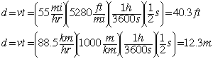

Distance, velocity and timeOn the highway at speed 55 mi/h (88.5 km/h), you close your eyes for half a second during a sneeze. How far do you travel while your eyes are closed? Solution: All constant acceleration problems can be solved using the basic motion equations. This problem involves more in unit conversion than in actual motion calculation, and one approach is to just make fractions out of all the conversion factors so that the desired units remain and the others are canceled out. 
|
Index Motion with constant acceleration | |
| HyperPhysics***** Mechanics | Go Back |